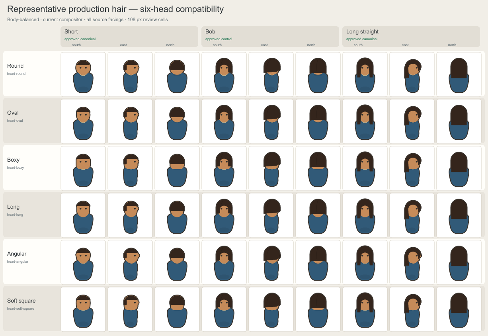
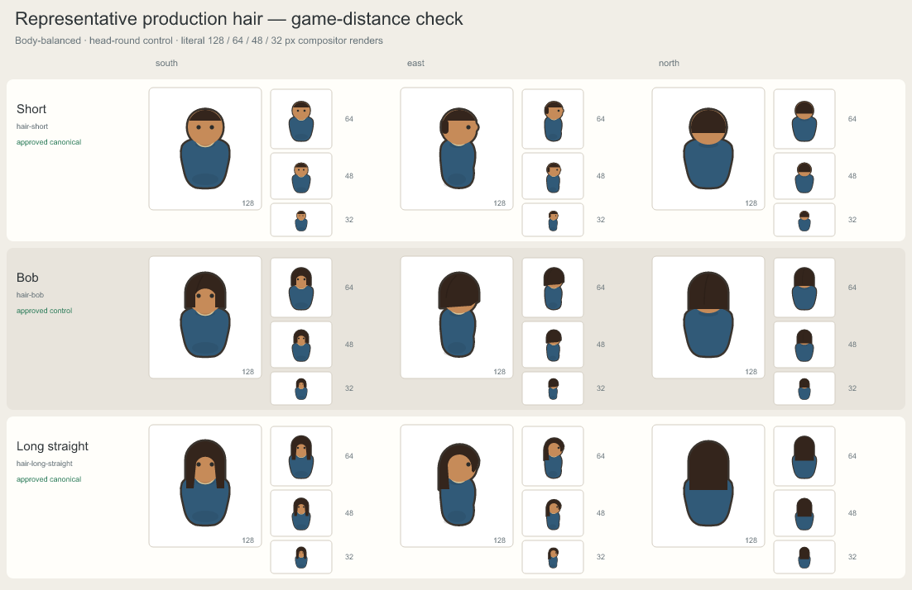

Representative production hair-family review
Short, Bob, and Long straight are approved canonical production geometry. Long straight east uses a single rear fall and short temple edge so the profile turn remains distinct. All cells come directly from the production compositor; this preview does not alter part sources.
Six-head compatibility across source facings

Game-distance readability
